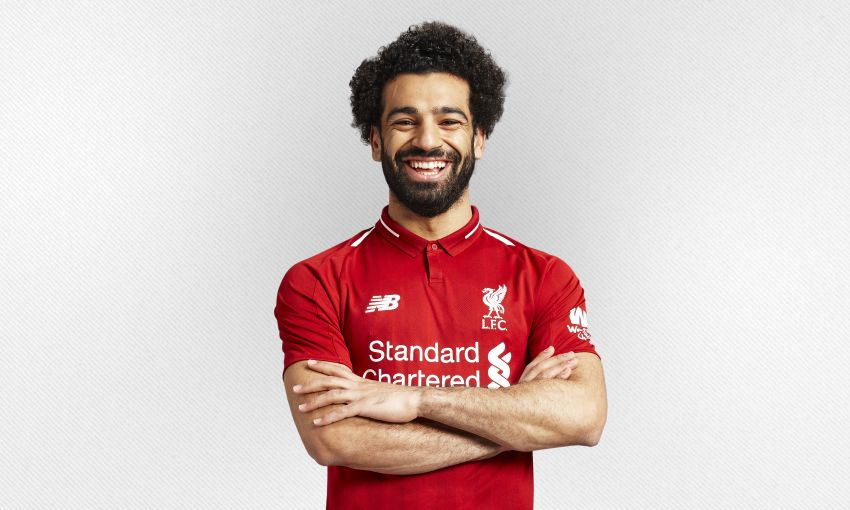

Mohammad Salah
His life
Date of birth:
15.07.1992
Country:
Egypt
His career
2010–2012
Al Mokawloon
2012-2014:
Basel
2014-2016:
Chelsea
2014-2015:(loan)
Roma
2015(loan)
ACF Fiorentina
His career games goals and asists
Basel:
79(games) 20(goals) 17(asists)
ACF Fiorentina:
26(games) 9(goals) 6(asists)
Chelsea:
19(games) 2(goals) 4(asists)
Al Mokawloon:
44(games) 12(goals) 6(asists)
Liverpool:
254(games) 156(goals) 63 (asists)
His trophies with clubs
Club world cup (Liverpool)🏆
Champions league (Liverpool)🏆
UEFA Super cup (Liverpool)🏆
Primer league (Liverpool)🏆
Swiss Champion (Basel)🏆🏆
FA cup (Liverpool)🏆
League cup (Liverpool)🏆
His own trophies
African footbal player of the year:
2017-2018🏆🏆
FIFA PUSHKAS:
2018🏆
Top scorrer of th season:
2017/2018 2018/2019 2021/2011🏆🏆🏆
Top scorer qualification Africa:
2016/2017🏆
Player of the year:
2012/2013(Basel) 2017/2018🏆(Liverpool)🏆🏆
TM Player of the year:
2018